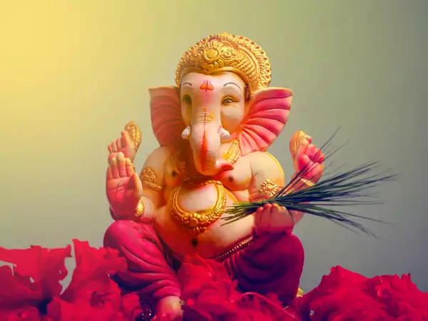
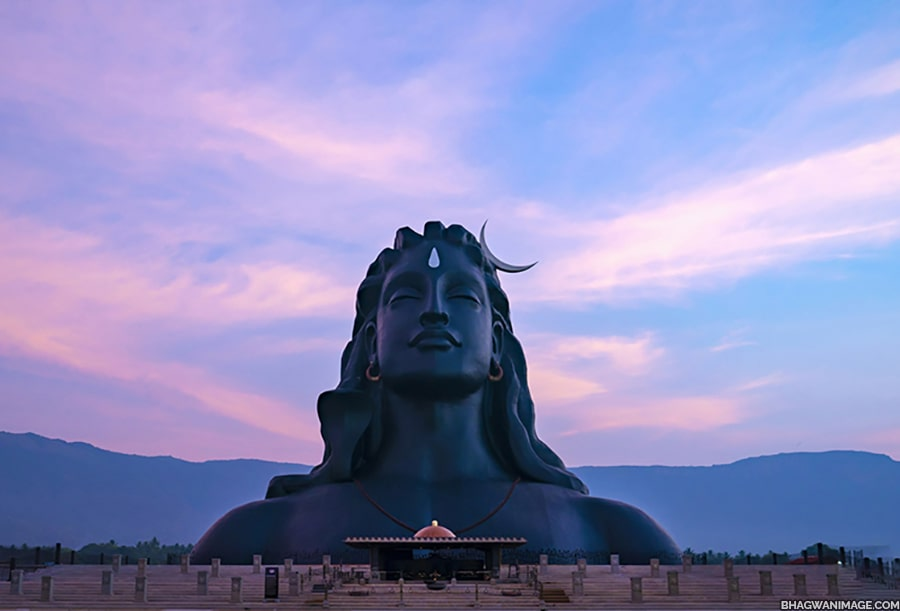
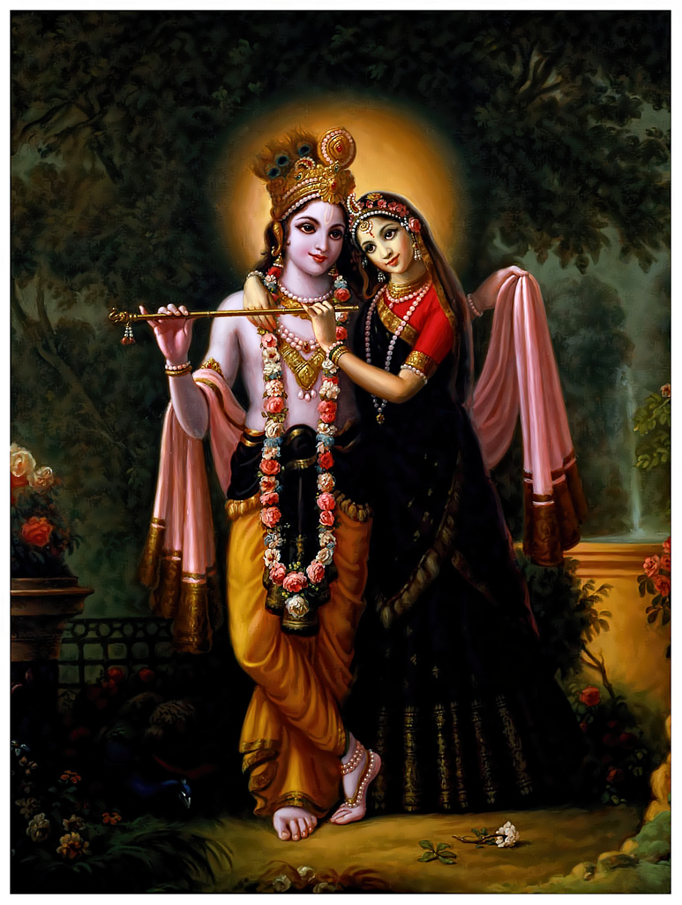

Ganesha (also Ganesa or Ganapati) is one of the most important gods in Hinduism. He is highly recognisable with his elephant head and human body, representing the soul (atman) and the physical (maya). Also the patron of writers, travellers, students, and commerce, he removes obstacles blocking new projects and is fond of sweets, to the slight detriment of his figure. Ganesha is also worshipped as a principal deity in both Jainism and Buddhism. For the Ganapatya Hindu sect, Ganesha is the most important deity.Ganesha is the son of Shiva and Parvati and he is the brother of Karthikeya (or Subrahmanya), the god of war. He was created by his mother using earth which she moulded into the shape of a boy. As Shiva was away on his meditative wanderings, Parvati set her new son as guard while she bathed.
Mahadeva is also the name of a figure in Buddhism who allegedly caused one of the first schisms between scholars of the early Buddhist schools, although many contest this. It is said that he caused this schism in his role as the founder of the Mahasamghikas, one of the early Buddhist schools associated with the development of Mahayana Buddhism.Finally, the name, Mahadeva, is associated with another historical figure who founded the Caitika sect more than 100 years after the Buddhist schism.To help you bring attention to your doshas and to identify what your predominant dosha is, we created the following quiz. Try not to stress over every question, but simply answer based off your intuition. After all, you know yourself better than anyone else.
Krishna, Sanskrit Kṛṣṇa, one of the most widely revered and most popular of all Indian divinities, worshipped as the eighth incarnation (avatar, or avatara) of the Hindu god Vishnu and also as a supreme god in his own right. Krishna became the focus of numerous bhakti (devotional) cults, which have over the centuries produced a wealth of religious poetry, music, and painting. The basic sources of Krishna’s mythology are the epic Mahabharata and its 5th-century-CE appendix, the Harivamsha, and the Puranas, particularly Books X and XI of the Bhagavata-purana. They relate how Krishna (literally “black,” or “dark as a cloud”) was born into the Yadava clan, the son of Vasudeva and Devaki, who was the sister of Kamsa, the wicked king of Mathura (in modern Uttar Pradesh). Kamsa, hearing a prophecy that he would be destroyed by Devaki’s child, tried to slay her children.